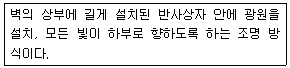
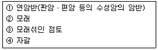

실내건축기능사 (2010-10-03 기출문제)
1과목: 실내디자인
1. 다음 설명에 알맞은 건축화 조명 방식은?

- 펜던트 조명
- 코니스 조명
- 광천장 조명
- 광창 조명
(정답률: 49%)

2. 다음 중 거실의 가구 배치에 영향을 주는 요인과 가장 거리가 먼 것은?
- 거실의 규모와 형태
- 개구부의 위치와 크기
- 거실의 벽지 색상
- 거주자의 취향
(정답률: 77%)
3. 주택설계의 방향에 대한 설명 중 옳지 않은 것은?
- 입식과 좌식을 혼용한다.
- 가사노동이 경감되도록 한다.
- 생활의 쾌적함이 증대되도록 한다.
- 가장 중심의 주거가 되도록 한다.
(정답률: 75%)
4. 일반적으로 규칙적인 요소들의 반복으로 디자인에 시각적인 질서를 부여하는 통제된 운동감각을 의미하는 실내 디자인의 구성원리는?
- 조화
- 균형
- 리듬
- 강조
(정답률: 75%)
5. 방풍 및 열손실을 최소로 줄여주는 반면 동선의 흐름을 원활히 해주는 출입문의 형태는?
- 접문
- 회전문
- 미닫이문
- 여닫이문
(정답률: 83%)
6. 거실에 식사공간을 부속시킨 형식으로 식사도중 거실의 고유기능과의 분리가 어렵다는 단점이 있는 것은?
- 리빙 키친(Living Kitchen)
- 다이닝 키친(Dining Kitchen)
- 다이닝 포치(Dining Porch)
- 리빙 다이닝(Living Dining)
(정답률: 78%)
7. 거의 모든 광속(90~100%)을 윗방향으로 강하게 발산하며 천장 및 윗벽 부분에서 반사되어 방의 아래 각 부분으로 확산시키는 방식으로 직사 눈부심이 거의 일어나지 않는 조명기구는?
- 직접 조명 기구
- 반 직접 조명 기구
- 간접 조명 기구
- 반간접 조명 기구
(정답률: 82%)
8. 디자인 구성 요소 중 사선이 주는 느낌과 가장 거리가 먼 것은?
- 약동감
- 안정감
- 운동감
- 생동감
(정답률: 79%)
9. 형태의 지각 심리에서 공동운명의 법칙이라고도 하며 유사한 배열이 하나의 묶음이 되어 선이나 형으로 지각되는 것은?
- 근접성의 원리
- 유사성의 원리
- 폐쇄성의 원리
- 연속성의 원리
(정답률: 43%)
10. 기념비적인 스케일에서 일반적으로 느끼는 감정은?
- 엄숙함
- 친밀감
- 답답함
- 안도감
(정답률: 88%)
11. 실내공간을 형성하는 주요 기본 구성요소로 인간의 감각중 촉각적 요소와 관계가 가장 밀접한 것은?
- 벽
- 바닥
- 천장
- 기둥
(정답률: 76%)
12. 다음 중 실내 디자인의 영역을 분류할 때 상업공간에 해당되는 것은?
- 사무실
- 백화점
- 은행
- 관공서
(정답률: 84%)
13. 부업의 가구 배치 유형 중 좁은 면적 이용에 효과적이며 주로 소규모 부엌에 사용되는 것은?
- 일자형
- L자형
- 병렬형
- U자형
(정답률: 74%)
14. 상점 기본 계획시 상점구성의 방법(AIDMA법칙)의 내용으로 옳지 않은 것은?
- A : Attention(주의)
- I : Interest(흥미)
- D : Desire(욕망)
- M : Money(금전)
(정답률: 81%)
15. 실내디자인의 개념과 가장 거리가 먼 것은?
- 순수예술
- 디자인 활동
- 실행과정
- 전문과정
(정답률: 87%)
16. 다음 중 열전도율의 단위는?
- W
- W/m
- W/m -K
- W/m2 -K
(정답률: 72%)
17. 잔향시간에 대한 설명으로 옳지 않은 것은?
- 실의 용적에 비례한다.
- 실의 흡음력에 반비례한다.
- 잔향시간이 너무 길면 음이 명료하지 않아 음을 듣기 어렵게 된다.
- 음원으로부터 음의 발생을 중지시킨 후 소리가 완전히 없어지는데 까지 걸리는 시간이다.
(정답률: 38%)
18. 일반적인 공기조화설비의 조절대상이 되지 않는 것은?
- 습도
- 온도
- 기류
- 벽체의 복사열
(정답률: 73%)
19. 다음 중 측창채광에 관한 설명으로 옳지 않은 것은?
- 같은 면적의 천창에 비해 채광량이 작다.
- 벽면에 있는 수직인 창에 의한 채광을 말한다.
- 편측채광의 경우 실 전체의 조도분포가 균일하다.
- 근린의 상황에 의해 채광 방해를 받을 수 있다.
(정답률: 75%)
20. 열의 이동 방법 중 어떤 물체에 발생하는 열에너지가 전달 매개체가 없이 직접 다른 물체에 도달하는 현상은?
- 전도
- 대류
- 복사
- 열관류
(정답률: 49%)
2과목: 실내환경
21. 콘크리트 타설 후 블리딩에 의해서 부상한 미립물은 콘크리트표면에 얇은 피막이 되어 침적하는데, 이것을 무엇이라 하는가?
- 실리카
- 포졸란
- 레이턴스
- AE제
(정답률: 50%)
22. 블론 아스팔트를 용제에 녹인 것으로 액상을 하고 있으며 아스팔트 방수의 바탕처리재로 이용되는 것은?
- 아스팔트 펠트
- 아스팔트 루핑
- 아스팔트 프라이머
- 아스팔트 콤파운드
(정답률: 60%)
23. 석재에 대한 설명으로 옳지 않은 것은?
- 압축강도가 크고 불연성이다.
- 가공이 용이하여 가구재로 적합하다.
- 내구성, 내화학성, 내마모성이 우수하다.
- 화강암은 화열에 닿으면 균열이 발생하여 파괴된다.
(정답률: 68%)
24. 단열, 방서, 방음효과가 크고 결로 방지용으로 우수한 유리 제품은?
- 망입 유리
- 강화 유리
- 복층 유리
- 반사 유리
(정답률: 72%)
25. 비철금속 중 동에 관한 설명으로 옳지 않은 것은?
- 연성이고 가공성이 풍부하다.
- 비자성체이며 전기전도율이 크다.
- 내알칼리성이 크므로 시멘트 등에 접하는 곳에 사용하더라도 부식되지 않는다.
- 건조한 공기중에는 산화하지 않으나, 습기가 있거나 탄산가스가 있으면 녹이 발생한다.
(정답률: 64%)
26. 목재 집성제에 대한 설명 중 옳지 않은 것은?
- 요구된 치수, 형태의 재료를 비교적 용이하게 제조할 수 있다.
- 충분히 건조된 건조재를 사용할 경우 비틀림, 변형 등이 생기지 않는다.
- 제재판재 또는 소각재를 3, 5, 7장 등과 같이 정확하게 홀수로 접착시켜야 한다.
- 제재품이 갖는 옹이, 할열 등의 결함을 제거, 분산시킬수 있으므로 강도의 편차가 적다.
(정답률: 47%)
27. 건축재료를 화학조성에 의해 분류할 경우, 다음중 무기재료에 속하지 않는 것은?
- 석재
- 도자기
- 알루미늄
- 아스팔트
(정답률: 45%)
28. 점토에 대한 설명 중 옳지 않은 것은?
- 점토의 비중은 일반적으로 2.5~2.6 정도이다.
- 점토 입자가 미세할수록 가소성은 나빠진다.
- 압축강도는 인장강도의 약 5배 정도이다.
- 점토의 주성분은 실리카와 알루미나이다.
(정답률: 61%)
29. 건축 구조재료에 요구되는 성능과 가장 거리가 먼 것은?
- 역학적 성능
- 물리적 성능
- 내구성능
- 감각적 성능
(정답률: 75%)
30. 기본 점성이 크며 내수성, 내약품성, 전기절연성이 모두 우수한 만능형 접착제로, 금속, 플라스틱, 도자기, 유리, 콘크리트 등의 접합에 사용되는 것은?
- 에폭시 접착제
- 요소수지 접착제
- 페놀수지 접착제
- 멜라민수지 접착제
(정답률: 75%)
3과목: 실내건축재료
31. 시멘트의 안정성 측정에 사용되는 시험법은?
- 브레인법
- 표준체법
- 슬럼프 테스트
- 오토클레이브 팽창도 시험방법
(정답률: 46%)
32. 골재의 성인에 의한 분류 중 인공골재에 속하는 것은?
- 강모래
- 산모래
- 중정석
- 부순모래
(정답률: 70%)
33. 투명도가 매우 높은 것으로 항공기의 방풍 유리에 사용되며 유기유리라고도 불리우는 합성 수지는?
- 염화비닐 수지
- 폴리에틸렌 수지
- 메타크릴 수지
- 에폭시 수지
(정답률: 41%)
34. 표준형 점토벽돌의 크기로 알맞은 것은?
- 190mm ｘ 90mm ｘ 57mm
- 210mm ｘ 100mm ｘ 60mm
- 190mm ｘ 90mm ｘ 60mm
- 210mm ｘ 100mm ｘ 57mm
(정답률: 75%)
35. 석회석이 변화되어 결정화한 것으로 석질이 치밀하고 견고할 뿐 아니라 외관이 미려하여 실내장식재 또는 조각재로 사용되는 석재는?
- 응회암
- 대리석
- 사문암
- 점판암
(정답률: 78%)
36. 다음 미장재료에 대한 설명 중 옳지 않은 것은?
- 석고플라스터는 내화성이 우수하다.
- 돌로마이트 플라스터는 건조 수축이 크기 때문에 수축 균열이 발생한다.
- 킨즈시멘트는 고온소성의 무수석고를 특별한 화학처리를 한것으로 경화 후 아주 단단하다.
- 회반죽은 소석고에 모래, 해초물, 여물 등을 혼합하여 바르는 미장재료로서 건조 수축이 거의 없다.
(정답률: 55%)
37. 다음 중 창호 철물의 사용용도가 잘못 연결된 것은?
- 여닫이문 - 경첩, 함자물쇠
- 오르내리창 - 크레센트
- 미서기문 - 도어 체크
- 자재문 - 플로어 힌지
(정답률: 44%)
38. 콘크리트가 시일이 경과함에 따라 공기 중의 탄산가스 작용을 받아 알칼리성을 잃어가는 현상은?
- 건조수축
- 동결융해
- 중성화
- 크리프
(정답률: 69%)
39. 다음 중 내알칼리성이 가장 좋은 도료는?
- 유성 페인트
- 유성 바니시
- 알루미늄 페인트
- 염화비닐수지도료
(정답률: 56%)
40. 목재에 대한 설명으로 옳지 않은 것은?
- 가공성이 좋다.
- 단열성이 작다.
- 차음성이 있다.
- 마감면이 아름답다.
(정답률: 67%)
41. 철근 콘크리트보에서 늑근을 사용하는 가장 중요한 이유는?
- 주근의 위치 고정
- 휨모멘트에 대한 보강
- 축력에 대한 보강
- 전단력에 의한 균열방지
(정답률: 39%)
42. 철골보에 대한 설명 중 옳지 않은 것은?
- 형강보는 주로 I형강과 H형강이 사용된다.
- 허니콤 보는 H형강의 웨브를 절단하여 6각형의 구멍이 생기도록 하여 다시 용접한 것이다.
- 커버플레이트의 크기는 전단력에 따라 결정된다.
- 웨브플레이트의 좌굴을 방지하기 위하여 스티프너를 설치한다.
(정답률: 38%)
43. 교량과 같은 장스팬에서 무거운 하중을 부담할 수 있는 부재를 만들기 위하여 도입된 구조는?
- 가구조립식구조
- 판조립식구조
- 상자조립식구조
- 프리스트레스트 콘크리트구조
(정답률: 70%)
44. 선의 종류에 따른 용도로 옳지 않은 것은?
- 실선 - 물체의 보이는 부분을 나타내는데 사용
- 파선 - 물체의 보이지 않는 부분의 모양을 표시하는데 사용
- 1점 쇄선 - 물체의 절단한 위치를 표시하거나, 경계선으로 사용
- 2점 쇄선 - 물체의 중심축, 대칭축을 표시하는데 사용
(정답률: 70%)
45. 척도에 관한 설명으로 옳은 것은?
- 축척은 실물보다 크게 그리는 척도이다.
- 실척은 실물보다 작게 그리는 척도이다.
- 배척은 실물과 같게 그리는 척도이다.
- NS(No Scale)는 그림의 형태가 치수에 비례하지 않는 것을 뜻한다.
(정답률: 78%)
46. 목재 접합 방법 중 길이 방향에 직각이나 일정한 각도를 가지도록 경사지게 붙여대는 것은?
- 이음
- 맞춤
- 쪽매
- 산지
(정답률: 39%)
47. 벽돌쌓기법에 대한 설명 중 옳지 않은 것은?
- 영식 쌓기는 처음 한 켜는 마구리쌓기, 다음 한켜는 길이 쌓기를 교대로 쌓는 것으로 통줄눈이 생기지 않는다.
- 네덜란드식 쌓기는 영국식과 같으나 모서리 끝에 칠오토막을 사용하지 않고 이오토막을 사용한다.
- 프랑스식 쌓기는 부분적으로 통줄눈이 생기므로 구조벽체로는 부적합하다.
- 영롱 쌓기는 벽돌벽 등에 장식적으로 구멍을 내어 쌓는 것이다.
(정답률: 51%)
48. 목조건물의 중요부재를 건물하부에서부터 차례로 기술한 것은?
- 기둥→깔도리→평보→처마도리
- 깔도리→기둥→처마도리→평보
- 평보→기둥→처마도리→깔도리
- 처마도리→깔도리→평보→기둥
(정답률: 44%)
49. 다음 중 창물틀 옆에 사용되는 블록은?
- 창쌤블록
- 창대블록
- 인방블록
- 양마구리블록
(정답률: 26%)
50. 고력 볼트 접합이 힘을 전달하는 방식은?
- 인장력
- 모멘트
- 전단력
- 마찰력
(정답률: 56%)
4과목: 건축일반
51. 주택의 평면도에 표시되어야 할 사항이 아닌 것은?
- 가구의 높이
- 기준선
- 벽, 기둥, 창호
- 실의 배치와 넓이
(정답률: 74%)
52. 투시도 작도에서 소점이 항상 위치하는 곳은?
- 화면선
- 수평선
- 기선
- 시선
(정답률: 38%)
53. 다음 중 도면에 쓰이는 기호와 그 표시사항의 연결이 옳지 않은 것은?
- THK - 두께
- L - 길이
- R - 반지름
- V - 나비
(정답률: 74%)
54. 건축구조에서의 시공 과정에 의한 분류 중 하나로 현장에서 물을 거의 쓰지 않으며 규격화된 기성재를 짜맞추어 구성하는 구조는?
- 습식구조
- 건식구조
- 조립구조
- 일체식구조
(정답률: 50%)
55. 혼화 재료인 플라이 애시(fly ash)의 성능에 대한 설명으로 옳지 않은 것은?
- 유동성 개선
- 단위 수량 감소
- 재료 분리 증가
- 장기 강도 증대
(정답률: 46%)
56. 지반의 허용 지내력도가 작은것에서 큰 순으로 옳게 나열된 것은?

- ②-①-③-④
- ③-②-①-④
- ②-③-④-①
- ③-②-④-①
(정답률: 62%)
57. 다음의 각종 구조에 대한 설명 중 옳지 않은 것은?
- 목구조는 시공이 용이하며, 공사기간이 짧다.
- 벽돌구조는 횡력에는 강하나 대규모 건물에는 부적합하다.
- 철근콘크리트구조는 내구, 내화, 내진적이다.
- 철골구조는 고층이나 간사이가 큰 대규모 건축물에 적합하다.
(정답률: 55%)
58. 다음 중 건축 제도 용구가 아닌 것은?
- 홀더
- 원형 템플릿
- 데오돌라이트
- 컴퍼스
(정답률: 70%)
59. 벽돌이 받는 하중이 균등하게 전달되게 하기 위하여 엇갈리게 쌓은 벽돌의 줄눈명칭은?
- 치장줄눈
- 민줄눈
- 막힌줄눈
- 세로줄눈
(정답률: 54%)
60. 경첩 등을 축으로 개폐되는 창호를 말하며, 열고 닫을 때 실내의 유효 면적을 감소시키는 단점이 있는 창호는?
- 미닫이 창호
- 미서기 창호
- 여닫이 창호
- 붙박이 창호
(정답률: 74%)